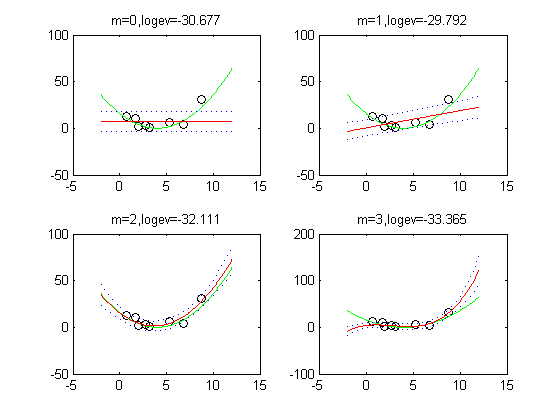
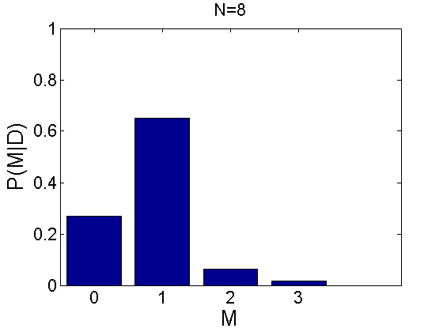
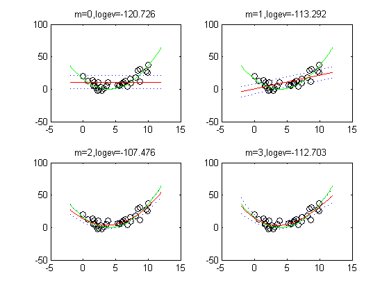
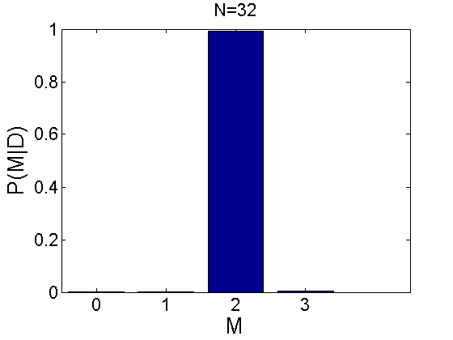

Model selection demo for polynomial regression
This illustartes that if we have more data, Bayes picks a more complex model.
Ns = [8 32]; for ni=1:length(Ns) ndata = Ns(ni); seed = 2; rand('state', seed); randn('state', seed); x1d=rand(ndata,1)*10; % input points e=randn(ndata,1); % noise ytrain = (x1d-4).^2 + 5*e; % actual function plotvals1d = [-2:0.1:12]'; % uniform grid for plotting/ testing trueOutput = (plotvals1d-4).^2; figure; degs = [0 1 2 3]; for m=1:length(degs) deg=degs(m); X = polyBasis(x1d, deg); X = X(:,2:end); % omit column of 1s Xtest = polyBasis(plotvals1d, deg); Xtest = Xtest(:, 2:end); [model, logev(m)] = linregNetlabFitEb(X, ytrain); [mu, sig2] = linregNetlabPredict(model, Xtest); sig = sqrt(sig2); % Plot the data, the original function, and the trained network function. subplot(2,2,m) plot(x1d, ytrain, 'ok') hold on plot(plotvals1d, trueOutput, 'g-'); plot(plotvals1d, mu, '-r') plot(plotvals1d, mu + sig, 'b:'); plot(plotvals1d, mu - sig, 'b:'); title(sprintf('m=%d,logev=%5.3f', m-1, logev(m))) end str = sprintf('polybayesEvidence_N%d', ndata); figure; PP=exp(logev); PP=PP/sum(PP); bar(degs, PP) axis([-0.5 length(degs)+0.5 0 1]); set(gca,'FontSize',16); aa=xlabel('M'); set(aa,'FontSize',20); aa=ylabel('P(M|D)'); set(aa,'FontSize',20); str = sprintf('polybayesEvidence_histo_N%d', ndata); title(sprintf('N=%d', ndata)) end % for ni   